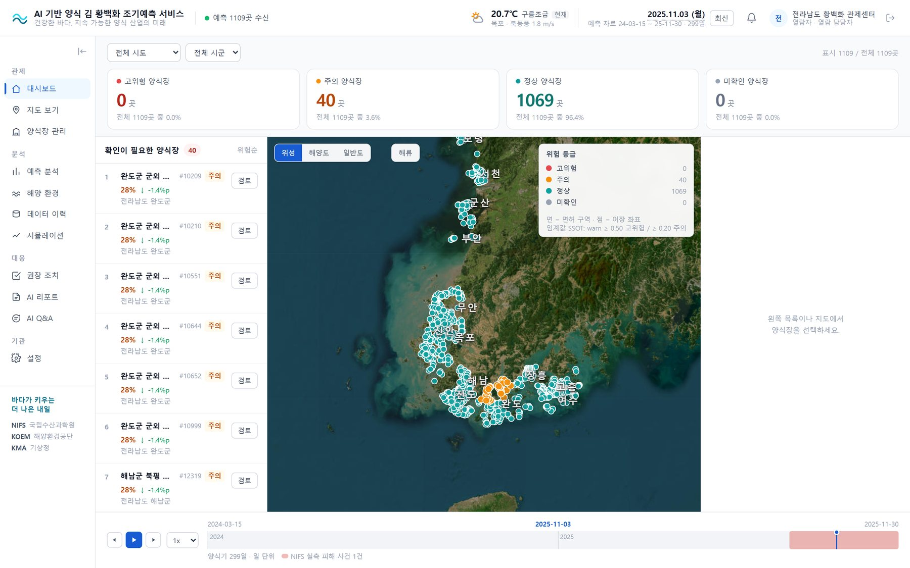
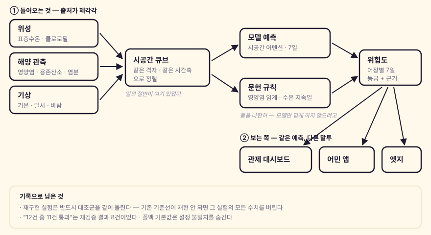
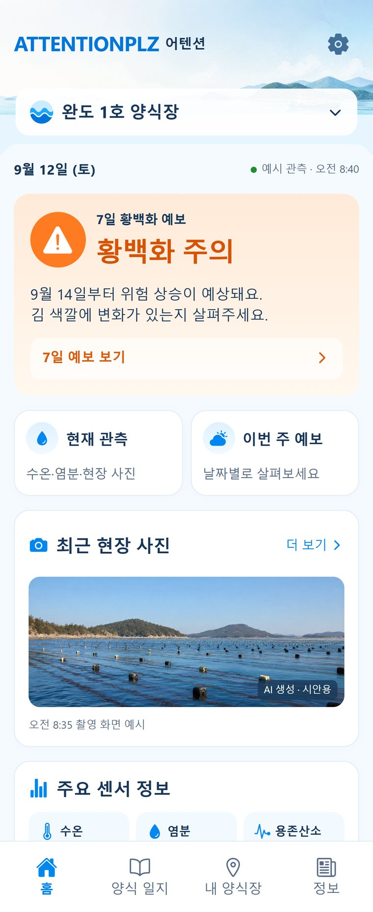

김 양식장에 황백화가 오기 전에 미리 경고하는 시스템입니다. 전국 약 1,100개 어장을 지도에 띄우고 7일 예보를 줍니다.
과학기술정보통신부 주관 AI 챔피언십 출품작이고, 본선을 통과해 결선에 올라가 있습니다(결선 11월, 킨텍스).
서비스: https://oceantensor.ai.kr/app/

1. 무엇을 푸는가
김은 바다에 그물(발)을 띄워 기릅니다. 바닷물의 영양염이 떨어지거나 수온이 높게 유지되면 김이 누렇게 탈색되며 죽습니다. 이게 황백화입니다.
문제는 눈으로 보일 땐 이미 늦다는 것입니다. 색이 변한 뒤엔 그 발은 회복되지 않습니다. 어민에게 필요한 건 “지금 상태”가 아니라 “며칠 뒤가 위험한가” 입니다.
그런데 이걸 판단하려면 위성 수온, 영양염 관측, 기상 예보를 다 봐야 합니다. 출처가 다 다르고, 격자도 주기도 다릅니다. 그 조각들을 한 화면에 모으는 것이 이 프로젝트의 시작이었습니다.
2. 어떻게 도는가

입력을 합치는 게 절반이었습니다
모델보다 큐브를 만드는 일이 오래 걸렸습니다. 위성은 격자 단위, 관측소는 점 단위, 기상은 또 다른 격자입니다. 주기도 다릅니다 — 어떤 건 하루 한 번, 어떤 건 한 달에 두 번.
이걸 같은 격자·같은 시간축에 올려야 모델이 먹을 수 있습니다. 그 과정에서 빈 칸을 어떻게 메울 것인가가 계속 문제였고, 여기서 제일 비싼 교훈이 나왔습니다(아래 4번).
모델만 믿게 만들지 않았습니다
화면에 모델 점수만 띄우면, 틀렸을 때 왜 틀렸는지 아무도 설명할 수 없습니다. 그래서 문헌 기반 규칙(영양염 임계값과 수온 조건이 며칠 지속됐는가)을 나란히 보여줍니다.
둘이 같은 말을 하면 신뢰도가 올라가고, 어긋나면 그 자체가 정보입니다.
3. 어민이 보는 쪽
관제 대시보드는 기관용이고, 어민에게는 자기 양식장 하나만 보여주는 앱이 따로 있습니다.

같은 예측을 쓰지만 말투가 다릅니다. 기관 화면은 “warn 0.28, stage 2”처럼 수치를 그대로 쓰고, 앱은 “9월 14일부터 위험 상승이 예상돼요. 김 색깔에 변화가 있는지 살펴주세요”라고 씁니다.
같은 데이터를 두 어투로 내보내는 건 생각보다 큰 설계였습니다 — AI 질의응답도 보는 쪽에 따라 답변 톤을 나눕니다.
4. 제일 비싸게 배운 것 — “성능이 올랐다”를 의심하는 법
파이프라인을 재구현해서 결측 보간 방식을 바꿔가며 실험했습니다. 결과가 좋게 나왔습니다.
그런데 대조군(기존 방식)을 같이 돌려봤더니 기존 기준선이 재현되지 않았습니다. 실측 기준선보다 한참 낮게 나온 겁니다. 재구현이 원본과 미묘하게 달랐던 거였고, 그 실험의 모든 수치를 폐기했습니다.
대조군이 없었으면 “이 보간이 더 좋다”를 그대로 보고했을 겁니다. 재구현은 원본과 다르기 마련이고, 대조군이 없으면 “개선됐다”와 “재구현이 틀렸다”를 구분할 수 없습니다.
비슷한 게 또 있었습니다. 예측 정확도를 “12건 중 11건 통과”로 알고 있었는데, 재검증하니 실제로는 8건이었습니다. 공식 사건 발생일 자체를 “정상”으로 오판한 케이스가 섞여 있었습니다.
숫자가 좋게 나오면 한 번 더 세봐야 합니다. 나쁘게 나올 때는 어차피 다시 셉니다.
5. 운영에서 나온 것들
대회용으로 끝내지 않고 실제로 서버에 띄워 돌리다 보니, 모델과 무관한 문제가 더 많이 나왔습니다.
- 두 달간 조용히 죽어 있던 수집기 — 설정 이름이 어긋났는데, 소스에 하드코딩 폴백이 있던 모듈만 우연히 살아 있었습니다. 폴백을 안 쓴 정직한 모듈만 죽어 있었고, 매 실행 “0건 적재 완료”로 정상 종료하고 있었습니다
- “돌았나”와 “들어왔나”는 다른 질문 — cron은 매일 성공하는데 같은 14행을 10개월째 재적재하고 있던 파이프라인이 있었습니다. 실행 로그로는 영영 못 잡습니다. 데이터 자체의 관측 시각으로 신선도를 따로 재야 합니다
- 배포 위치와 실행 위치가 갈라진 것 — 코드를 고쳤는데 고친 게 안 돌고 있었습니다. 원격 파일 해시를 로컬과 대조하고 나서야 알았습니다
이 셋은 도메인과 무관해서 삽질노트에도 남겼습니다.
6. 지금
- 결선 준비 중 — 부스 시연, 현장 엣지 장비에서 같은 지수를 계산하는 갈래도 진행 중입니다
- 팀 프로젝트이고, 제 몫은 데이터 파이프라인·모델 서빙·관제 대시보드 쪽입니다
- 아직 열린 것: 2026년 구간 예측 복구, 모델 재학습 검토(양식 시즌 입력 변화에 둔감한 구간이 실측으로 확인됐습니다)
화면 캡처의 수치는 시연·검증용 데이터입니다. 서버 주소·계정 정보는 싣지 않습니다.
초안: 클또리(AI) · 공개 승인: PM · 사람 검토: 대기 중 — 사람이 정독·재현 확인 후 이 줄을 갱신합니다 · 코드·실측 조건은 본문 링크 기준